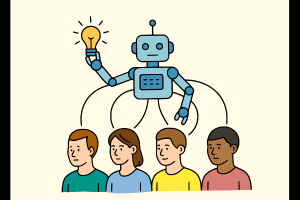

Be2BE AFRIQUE est une structure spécialisée dans l’économie de la santé, la biostatistique, l’épidémiologie et la recherche développement.
Nous travaillons avec les gouvernements, les institutions, les ONG, les universités et les communautés pour produire des données probantes, renforcer les capacités et accompagner la prise de décision.
Nos activités englobent la recherche et l'analyse à travers des études épidémiologiques, des évaluations de projets et des analyses statistiques avancées.
Nous proposons des formations certifiantes, des ateliers et séminaires, ainsi que le renforcement des capacités institutionnelles.
Notre appui aux politiques publiques inclut l'élaboration de directives et l'accompagnement technique des ministères.
Enfin, nous assurons la diffusion et le transfert de technologies via des publications, bulletins d'information et supports multimédias.
En savoir plusConstruire une Afrique où les décisions publiques, les innovations et les actions de développement reposent sur des preuves scientifiques solides.
Nous contacter
Notre gouvernance repose sur une organisation structurée et des principes clairs pour assurer la transparence, la responsabilité et une participation active de tous les membres.
Rejoignez Be2BE AFRIQUE pour contribuer à une Afrique où les décisions publiques, les innovations et les actions de développement reposent sur des preuves scientifiques solides. En devenant membre, vous aurez l'opportunité de participer à des projets de recherche, de bénéficier de formations spécialisées et de collaborer avec des experts du domaine.